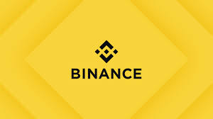
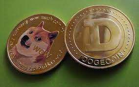
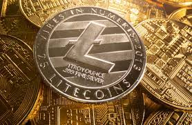
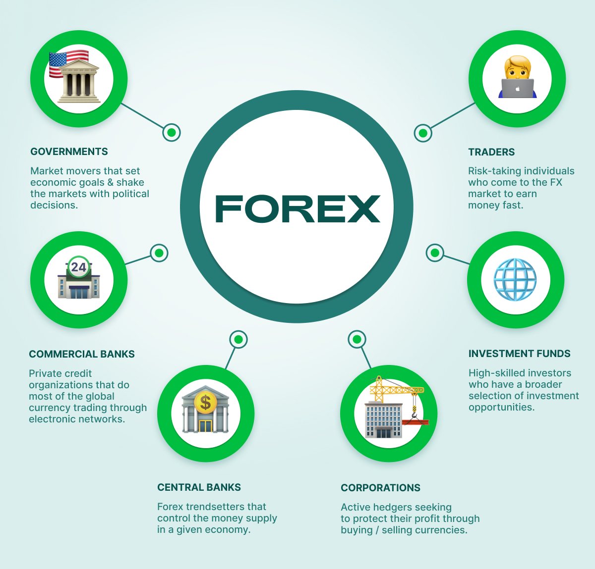
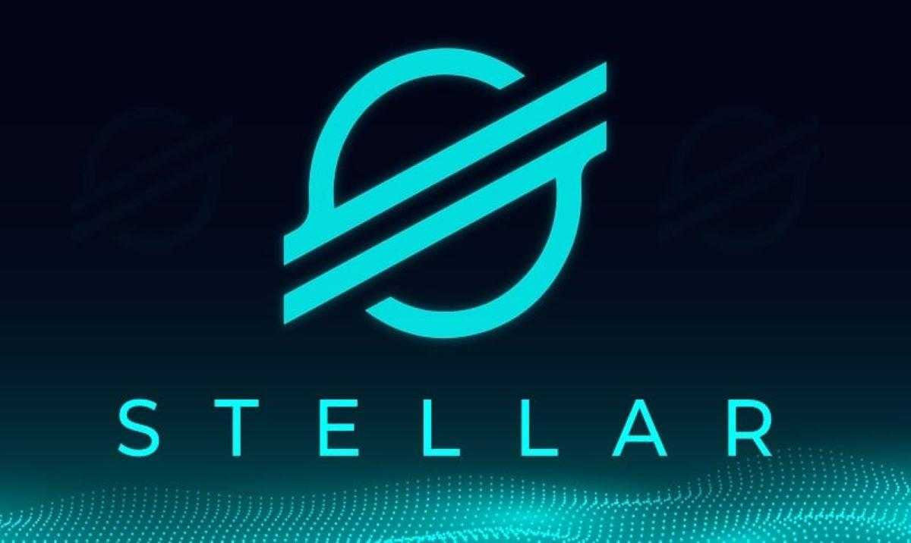
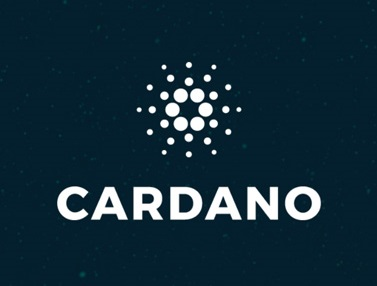

crypto is a digital currency designed to work as a medium of exchange
through a computer network that is not reliant on any
central authority, such as a government or bank, to uphold or maintain it. Ok soo in my mini-web we will go through six of the most popular cryptos that there are
Bitcoin
Bitcoin is a form of digital currency that aims to
eliminate the need for
central authorities such as banks or governments.
Instead, Bitcoin uses blockchain technology to support
peer-to-peer transactions between users on a decentralized network.
Binance

Binance is an online exchange where users
can trade cryptocurrencies. It supports hundreds of the
most commonly traded cryptocurrencies. Binance provides a
crypto wallet for traders to store their electronic funds.
The exchange has supporting services
for users to earn interest or transact using cryptocurrencies
Dogecoin

Dogecoin can be used for making payments and
purchases but has not been an effective store of value
cryptocurrency. This is due to an infinite number of Dogecoins
that can be created,
making the cryptocurrency highly inflationary by design.
Dai
Dai is a stablecoin on the Ethereum blockchain
whose value is kept as close to one United States dollar
as possible through a system of smart contracts and the decentralized participants those contracts incentivize
to perform maintenance and governance functions.
Ethereum
Ethereum is a decentralized blockchain with smart contract functionality.
Ether is the native cryptocurrency of the platform. Among cryptocurrencies, ether is second only to bitcoin in market capitalization.
It is open-source software.
Ethereum was conceived in 2013 by programmer Vitalik Buterin.
World Coin
Worldcoin is a decentralized open source protocol
supported by a global community of developers, economists and
technologists committed to expanding participation in, and access to,
the global digital economy. By creating a public utility,
ownership will belong to everyone.
Lite Coin

Litecoin is a decentralized peer-to-peer cryptocurrency and open-source software project released under the MIT/X11 license.
Inspired by Bitcoin, Litecoin was among the earliest altcoins, starting in October 2011. In technical details,
the Litecoin main chain shares a slightly modified Bitcoin codebase.
Forex

The foreign exchange market is a global decentralized or
over-the-counter market for the trading of currencies.
This market determines foreign exchange rates for every currency.
It includes all aspects of buying,
selling and exchanging currencies at current or determined prices.
Solana
Solana is a blockchain platform that was created in 2020 by Solana Labs and the Solana Foundation. The Solana blockchain has been subject to several outages, and Solana companies
have been subject to a class-action lawsuit regarding the sale of unregistered securities.
Stellar

XLM, or Stellar lumens, is the native cryptocurrency of the stellar blockchain and it is used to pay transaction fees. However, it is not the only cryptocurrency on the Stellar blockchain,
which can be used to move tokens representing anything from commodities to fiat currencies.
Zcash
Zcash is a cryptocurrency aimed at using cryptography to provide enhanced privacy for its users compared to other cryptocurrencies such as Bitcoin. Zcash is based on Bitcoin's codebase.
It shares many similarities, such as a fixed total supply of 21 million units.
Cardano

Cardano is a public blockchain platform. It is open-source and decentralized, with consensus achieved using proof of stake. It can facilitate peer-to-peer transactions with its internal cryptocurrency, ADA. Cardano's development began in 2015,
led by Ethereum co-founder Charles Hoskinson.